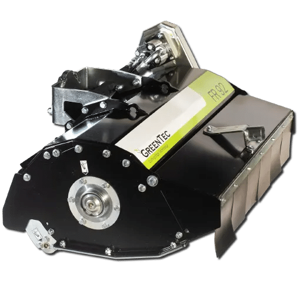
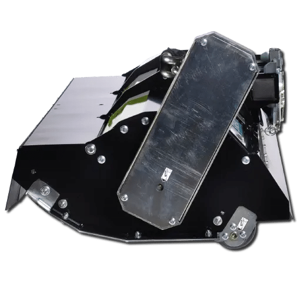
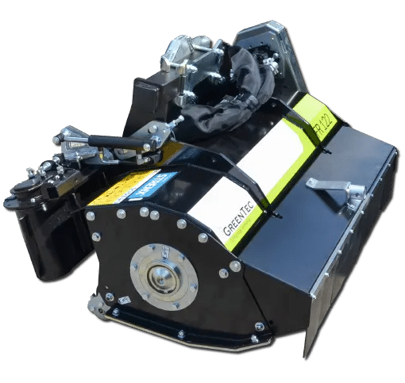

Hydraulic flail mowers
Hydraulic flail mower heads for compatible reach mower arms and excavators. Compare working widths from 0.9 to 1.6 m.
Compare the range ↓Explore GreenTec hydraulic flail mower heads for grass cutting, verge mowing, hedge maintenance and work on banks and ditches. The FR range offers working widths from 0.9 to 1.6 m, with a conveyor-belt model for managing cut material beside waterways.
These attachments can be used on compatible reach mower arms or excavators. Compare the working width, hydraulic requirements and mounting arrangement before choosing your head.
Browse GreenTec flail mower heads

Greentec Flail Mower FR 112
A 1.1 m hydraulic flail head for grass, thicket and verge maintenance. Oil-flow requirement: 40 L/min at 210 bar.
View detail
Greentec Flail Mower FR 122
A 1.2 m hydraulic flail head for compatible Scorpion boom mowers and excavator arms. Maximum branch capacity: up to 4 cm.
View detail
Greentec Flail Mower FR 122 VB
A 1.2 m flail head with a hydraulic conveyor belt that directs cut material away from the work area, including banks beside waterways.
View detailGreentec Flail Mower FR 162
A 1.6 m hydraulic flail head for grass mowing on verges, ditches and slopes, with compatible boom-arm or excavator mounting.
View detailGreentec Flail Mower FR 92
A compact 0.9 m hydraulic flail head for grass, hedge and verge maintenance. Oil-flow requirement: 40 L/min at 210 bar.
View detailNo matching models
Try another model name or keyword.
Compare FR flail mower models
Choose the working width and material-handling setup that suits your site. Check the linked product pages for full mounting and technical specifications.
Swipe to compare all columns.
| Model | Working width | Hydraulics and features |
|---|---|---|
| FR 92 | 0.9 m | 40 L/min at 210 bar; for grass, thicket and verge maintenance. |
| FR 112 | 1.1 m | 40 L/min at 210 bar; a wider option within the compact FR 92/112 range. |
| FR 122 | 1.2 m | Hydraulic head for compatible Scorpion boom mowers or excavator arms. |
| FR 162 | 1.6 m | Wider hydraulic head in the FR 122/162 range. |
| FR 122 VB | 1.2 m | Hydraulic conveyor belt directs cut material away from the work area. |
These FR models cut branches up to 4 cm thick. Confirm the carrier, brackets, hydraulic connections and head specification for your application.
Frequently asked questions
Can these flail mowers be used for verge mowing?
Yes. The FR 92 and FR 112 are designed for verge mowing of grass and thicket. The FR 122 and FR 162 are also used for grass mowing on verges, ditches, dykes and slopes.
Will a hydraulic flail mower fit my tractor or excavator?
These heads can mount on compatible Scorpion boom mowers for tractors or directly on excavator arms, with adapters and brackets for selected arrangements. This is a hydraulic cutting head: confirm the arm, bracket and oil-flow requirements for the selected model.
When should I consider the FR 122 VB?
The FR 122 VB has a hydraulically driven conveyor belt that can run in either direction. It is designed for embankments and ditches beside streams, rivers, canals and dams, directing cut material away from the water.
Guides and product information
- FR 122 VB conveyor-belt specification
Review the belt operation, mounting options and technical data.
- Find a compatible reach mower arm
Browse the GreenTec Scorpion and Spider range, then confirm the head-and-arm combination with DTE.
Confirm your flail mower setup
Send DTE your carrier and arm model, available hydraulic flow, required working width and site conditions. Include whether the job involves verge mowing, hedge maintenance or moving cut material away from water.